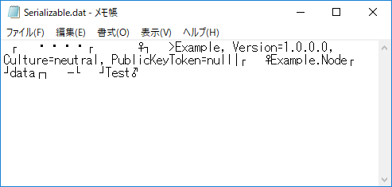

[C#] シリアライズ(Serialization)をする方法
こんにちは。明月です。
この投稿はC#でシリアライズ(Serialization)をする方法に関する説明です。
シリアライズとはメモリに割り当てしているクラスのデータをバイナリ化することです。つまり、クラス内部で変数のデータをすべてbyteタイプに変換することだと思えば良いです。
シリアライズは昔にたくさん使った記憶がありますが、最近はシリアライズよりJsonタイプに変換してデータ化することがトレンドなので、最近はよく使わないみたいです。
link - [C#] Newtonsoft.JSONライブラリを利用してJsonデータ構造を扱う方法
でも、Newtonsoft.Jsonを利用してデータをJsonタイプに変換することはクラスのPublicタイプだけ変換するし、データをすべてStringタイプに変換するので、限界があります。
シリアライズはPublicデータだけではなく、Privateも構造化するし、クラス自体をすべてByteタイプに変換することなので、クラス自体を格納することではよいです。
でも、シリアライズも短所があります。バイナリ化するので、当該なデータを人が読みにくいです。なのでメモ帳でデータ変更ができないです。
また、クラス自体を変換しましたから、クラスが変更がある場合に復元ができない可能性もあります。
Jsonも場合はプログラム言語に関係しずに、読み込む移植性がよいですが、シリアライズはC#で作成したらC#しか読み込まれないです。
正確にはクラス変更や他のプレートフォームでも読み込まられないことではないですが、データ漏れが発生したり、データが可笑しくなる可能性があります。
つまり、バグ発生する可能性があることです。
仕様によってシリアライズがよいかJsonを使うかを正しく選択して使う方がよいです。
using System;
using System.IO;
// シリアライズのライブラリ
using System.Runtime.Serialization;
using System.Runtime.Serialization.Formatters.Binary;
namespace Example
{
// シリアライズを使うために、当該クラスのアトリビュートに宣言する。
[Serializable]
// テストクラス
class Node
{
// 変数 - データ格納はコンストラクタで出力はPrint関数だけ。
private string data;
// コンストラクタ
public Node(string data)
{
this.data = data;
}
// 出力関数
public void Print()
{
// コンソールに出力
Console.WriteLine(this.data);
}
}
class Program
{
// 実行関数
static void Main(string[] args)
{
// テストクラスを宣言
// node.dataには「Test」データが格納される
var node = new Node("Test");
// シリアライズフォーマットクラス
var formatter = new BinaryFormatter();
// クラスをシリアライズして格納する変数
byte[] data;
// Streamでシリアライズしてdata変数にデータをコピーする。
using (var stream = new MemoryStream())
{
// クラスをStreamタイプに変換
formatter.Serialize(stream, node);
// 変数のサイズを割り当てする。
data = new byte[stream.Length];
// Streamのデータをbyteタイプに変換
data = stream.GetBuffer();
}
// シリアライズしたデータをファイルに格納する。
using (var stream = new FileStream("c:\\work\\Serializable.dat", FileMode.Create, FileAccess.Write))
{
stream.Write(data, 0, data.Length);
}
// データを読み込む
var info = new FileInfo("c:\\work\\Serializable.dat");
// データを再割り当てする。
data = new byte[info.Length];
// ファイルからデータを読み込む。
using (var stream = info.OpenRead())
{
stream.Read(data, 0, data.Length);
}
// Streamでデータをデシリアライズする。
using (MemoryStream stream = new MemoryStream())
{
// byteをStreamに読み込む。
stream.Write(data, 0, data.Length);
// Stream seekを最初に移動する。
stream.Seek(0, SeekOrigin.Begin);
// クラスをデシリアライズしてNodeクラスにキャストする。
node = (Node)formatter.Deserialize(stream);
}
// データを出力する。
node.Print();
Console.WriteLine("Press any key...");
Console.ReadKey();
}
}
}
Nodeというクラスをシリアライズしてbyte[]タイプに変換しました。変換してファイルに格納します。
また、格納したファイルを読み込んでデシリアライズでbyte[]データをクラスタイプに変換します。

ファイルをメモ帳で開きました。

人が解析することでは無理があります。
ここまでC#でシリアライズ(Serialization)をする方法に関する説明でした。
ご不明なところや間違いところがあればコメントしてください。
- [C#] NPOIを利用してExcelを読み込んで出力する方法2020/05/08 10:43:52
- [C#] NPOIライブラリを利用してエクセルファイルを生成する方法2020/05/07 01:49:01
- [C#] Geckoライブラリを利用してウェブスクレイピングする方法2020/05/05 00:52:26
- [C#] PDFを作成する方法(iTextSharp)2020/05/03 10:22:40
- [C#] シリアライズ(Serialization)をする方法2020/04/30 19:32:04
- [C#] dynamicタイプの動的パラメータ-DynamicObject(WinFormでASP.MVCのViewBagオブジェクトを使用する方法)2020/04/29 22:41:32
- [C#] Stringの補間式(interpolation)2020/04/27 20:39:57
- [C#] Newtonsoft.JSONライブラリを利用してJsonデータ構造を扱う方法2020/04/23 20:19:53
- [C#] EMailを送信する方法(System.Net.Mail)2020/04/22 19:00:42
- [C#] ini環境ファイルを使う方法2020/04/22 00:09:39
- [C#] 環境設定ファイルを扱う方法(System.Configuration)2020/04/20 19:37:57
- [C#] Reflectionを利用してクラス複製する方法2020/04/17 00:34:33
- [C#] XMLをXPathを利用してデータを取得する方法2020/04/16 00:47:17
- [C#] NSoupライブラリを利用してXMLとHTMLをパーシングする方法2020/04/14 19:34:15
- [C#] 日付フォーマット2020/04/09 20:53:20
- [C#] ソケット(Socket)通信をする方法2020/05/13 17:37:13
- [C#] NPOIを利用してExcelを読み込んで出力する方法2020/05/08 10:43:52
- [C#] NPOIライブラリを利用してエクセルファイルを生成する方法2020/05/07 01:49:01
- [C#] Geckoライブラリを利用してウェブスクレイピングする方法2020/05/05 00:52:26
- [C#] PDFを作成する方法(iTextSharp)2020/05/03 10:22:40
- [C#] シリアライズ(Serialization)をする方法2020/04/30 19:32:04
- [C#] dynamicタイプの動的パラメータ-DynamicObject(WinFormでASP.MVCのViewBagオブジェクトを使用する方法)2020/04/29 22:41:32
- [C#] Stringの補間式(interpolation)2020/04/27 20:39:57
- [C#] Newtonsoft.JSONライブラリを利用してJsonデータ構造を扱う方法2020/04/23 20:19:53
- [C#] EMailを送信する方法(System.Net.Mail)2020/04/22 19:00:42
- [C#] ini環境ファイルを使う方法2020/04/22 00:09:39
- [C#] 環境設定ファイルを扱う方法(System.Configuration)2020/04/20 19:37:57
- [C#] Reflectionを利用してクラス複製する方法2020/04/17 00:34:33
- [C#] XMLをXPathを利用してデータを取得する方法2020/04/16 00:47:17
- [C#] NSoupライブラリを利用してXMLとHTMLをパーシングする方法2020/04/14 19:34:15